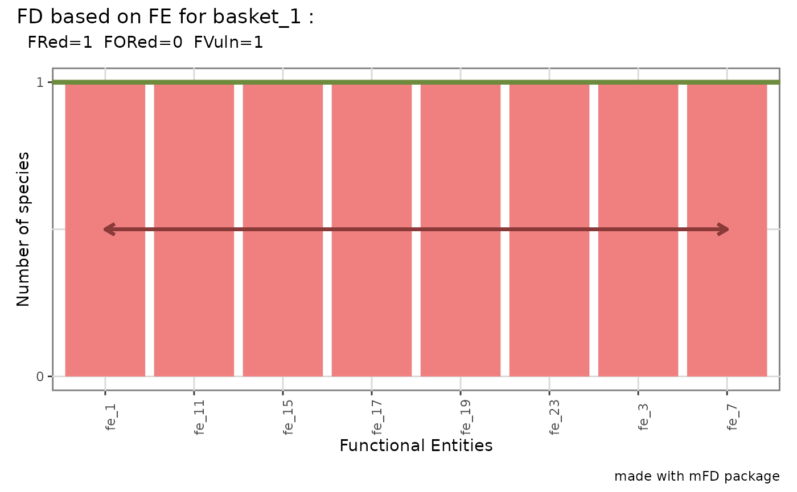

R/plot_FE_multidim.R
alpha.fd.fe.plot.RdGraphical representation of distribution of species in Functional
Entities (FE) and of indices from Mouillot et al. (2014). To plot
functional indices, functional indices values must have been computed first
through the use of the alpha.fd.fe function.
alpha.fd.fe.plot(
alpha_fd_fe,
plot_asb_nm,
plot_ind_nm = c("fred", "fored", "fvuln"),
name_file = NULL,
color_fill_fored = "darkolivegreen2",
color_line_fred = "darkolivegreen4",
color_fill_bar = "grey80",
color_fill_fvuln = "lightcoral",
color_arrow_fvuln = "indianred4",
size_line_fred = 1.5,
size_arrow_fvuln = 1,
check_input = TRUE
)output from the function alpha.fd.fe
applied on assemblage of interest with details_returned = TRUE.
a vector containing the name of the assemblage to plot.
a vector containing the names of the indices to plot. It
can be 'fred' to plot functional redundancy (FRed), 'fored' to
plot functional over-redundancy (FOred) and/or 'fvuln' to plot
functional vulnerability (FVuln). Default is all 3 indices.
a character string with name of file to save the figure
(without extension). Default: name_file = NULL which means plot is
displayed.
a R color name or an hexadecimal code referring to
the color used to fill the part of barplots that contain species in excess
in species-rich FEs. It refers to the FORed value. Default:
color_fill_fored = "darkolivegreen2".
a R color name or an hexadecimal code referring to
the color used to draw the horizontal line referring to the FRed value.
Default: color_line_fred = "darkolivegreen4".
a R color name or an hexadecimal code referring to the
color used to draw barplots. Default: color_fill_bar = "grey80".
a R color name or an hexadecimal code referring to
the color used to fill barplot containing only one species for
illustrating FVuln. Default: color_fill_fvuln = "lightcoral".
a R color name or an hexadecimal code referring to
the color used to draw the horizontal arrow showing the proportion of FEs
containing only one species for illustrating FVuln. If there is only
one FE containing one species, the arrow will be a point. Default:
color_arrow_fvuln = "indianred4".
a numeric value referring to the size of the
horizontal line illustrating FRed. Default: size_line_fred = 1.5.
a numeric value referring to the size of the arrow
showing the proportion of FEs containing only one species. Default:
size_arrow_fvuln = 1.
a logical value indicating whether key features the
inputs are checked (e.g. class and/or mode of objects, names of rows
and/or columns, missing values). If an error is detected, a detailed
message is returned. Default: check_input = TRUE.
A patchwork object with a barplot of number of species per
FE. Indices names provided in 'plot_ind_nm' are illustrated. Functional
Redundancy (average number of species per FE) is illustrated with a
horizontal line. Functional Over-redundancy (proportion of species in
excess in FE richer than average) is illustrated with top part of these
bars filled with 'color_fill_fored'. Functional Vulnerability (proportion
of FE with a single species) is illustrated with bars of these vulnerable
FE filled with 'color_fill_fvuln' and the double-head arrow highlighting
their number. FE-based indices values on top of the plot. if
name_file is provided, plot saved as a 300dpi png file in the
working directory.
Mouillot et al. (2014) Functional over-redundancy and high functional vulnerability in global fish faunas on tropical reefs. PNAS, 111, 13757-13762.
# Load Species*Traits dataframe
data("fruits_traits", package = "mFD")
# Load Traits categories dataframe
data("fruits_traits_cat", package = "mFD")
# Load Assemblages*Species matrix
data("baskets_fruits_weights", package = "mFD")
# Remove continuous trait
fruits_traits <- fruits_traits[ , -5]
fruits_traits_cat <- fruits_traits_cat[-5, ]
# Compute gathering species into FEs
sp_to_fe_fruits <- mFD::sp.to.fe(
sp_tr = fruits_traits,
tr_cat = fruits_traits_cat,
fe_nm_type = "fe_rank",
check_input = TRUE)
# Get the occurrence matrix
asb_sp_fruits_summ <- mFD::asb.sp.summary(asb_sp_w = baskets_fruits_weights)
asb_sp_fruits_occ <- asb_sp_fruits_summ$"asb_sp_occ"
# Compute alpha fd indices
alpha_fd_fe_fruits <- mFD::alpha.fd.fe(
asb_sp_occ = asb_sp_fruits_occ,
sp_to_fe = sp_to_fe_fruits,
ind_nm = c("fred", "fored", "fvuln"),
check_input = TRUE,
details_returned = TRUE)
# Plot fd fe indices
mFD::alpha.fd.fe.plot(
alpha_fd_fe = alpha_fd_fe_fruits,
plot_asb_nm = c("basket_1"),
plot_ind_nm = c("fred", "fored", "fvuln"),
name_file = NULL,
color_fill_fored = "darkolivegreen2",
color_line_fred = "darkolivegreen4",
color_fill_bar = "grey80",
color_fill_fvuln = "lightcoral",
color_arrow_fvuln = "indianred4",
size_line_fred = 1.5,
size_arrow_fvuln = 1,
check_input = TRUE)
